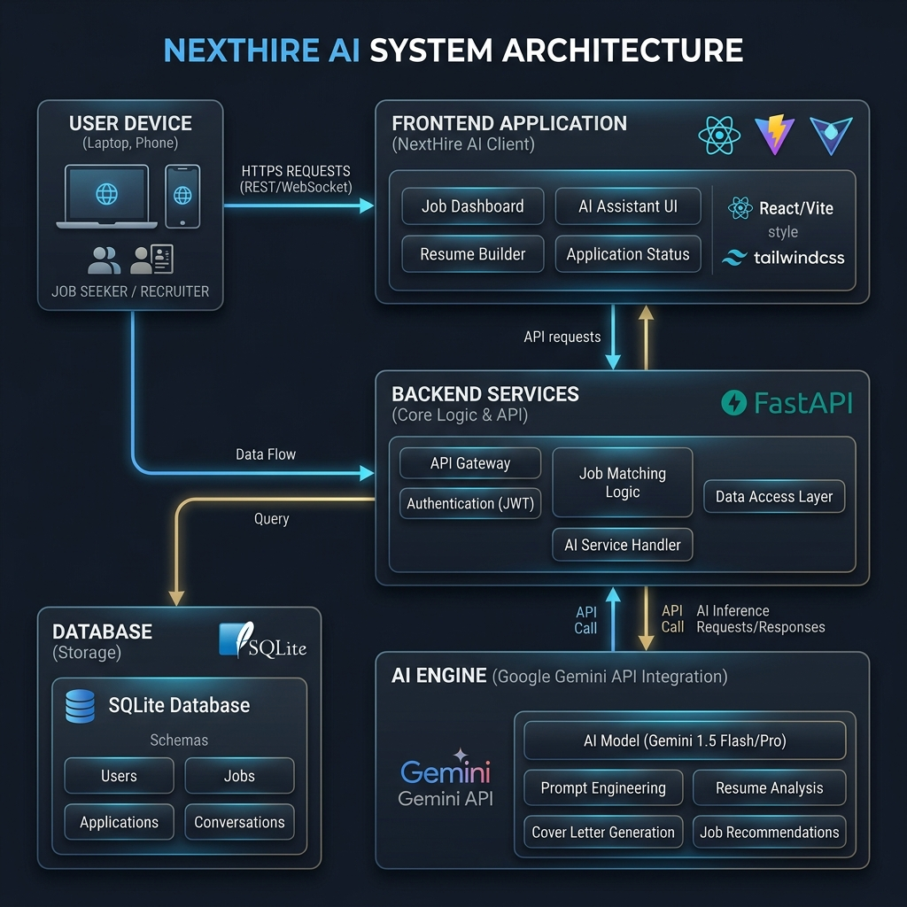
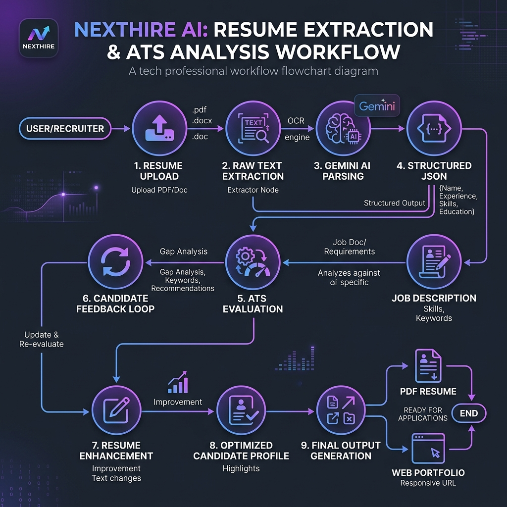
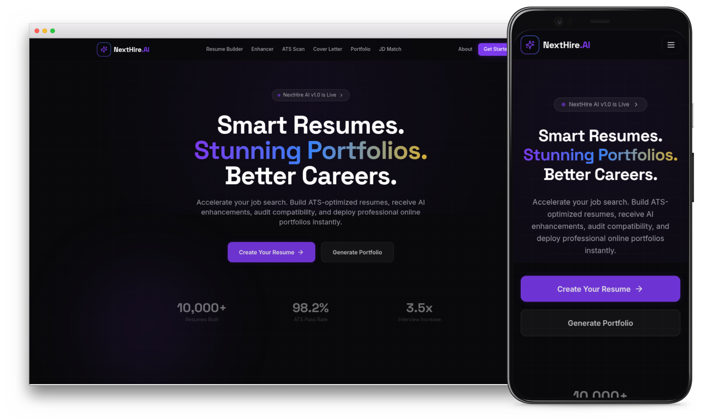

NextHire AI
Smart Resumes. Stunning Portfolios. Better Careers.
An AI-powered SaaS web application designed to help job seekers bypass ATS filters, build professional portfolios, and tailor job applications.
The Job Hunting Bottleneck
The ATS Filter Trap
Over 75% of resumes are discarded by automated Applicant Tracking Systems (ATS) due to poor formatting or missing core keywords before a human recruiter ever sees them.
The Portfolio Burden
Building a responsive, clean, and hosted professional portfolio web application takes significant technical knowledge, design skills, and hours of setup.
Application Fatigue
Job seekers send the same generic resume or waste hours manually tailoring bullet points and custom cover letters for dozens of different job descriptions.
NextHire AI: The Intelligent Solution
ATS Score Optimization
Upload existing resumes or paste job descriptions to receive immediate compatibility scores, identify keyword deficits, and implement auto-corrections.
One-Click Portfolios
Instantly compile your resume database entries into a gorgeous, fully customized public portfolio website. Choose layouts and themes with zero deployment overhead.
Hyper-Personalized AI
Powered by the Google Gemini API to analyze context, generate industry-specific vocabulary suggestions, recommend matching skills, and build targeted cover letters.
Core Features At A Glance
AI Resume Generator
Generate clean, professional, ATS-compliant resumes with structured sections.
AI Resume Enhancer
Refine descriptions using active verbs, vocabulary upgrades, and quantitative details.
ATS Score Analyzer
Grade compatibility, scan formatting errors, and view keyword coverage lists.
Portfolio Builder
Publish a stunning web portfolio instantly on a custom slug with dark/light themes.
Resume vs JD Matcher
Compare resumes directly with target job descriptions and output similarity metrics.
Cover Letter Writer
Draft customized and tailored cover letters matching the requirements of the job post.
System Architecture
Frontend (Vite + React + Tailwind): Global responsive shell served via Vercel Edge CDN.
API Layer (FastAPI): High-performance async routing controller hosted on Render Web Services.
Data (SQLite + SQLAlchemy): Flat file relational schema persistent storage via Render Disk volumes.
AI Engine (Google Gemini API): Semantic parsing, scoring analysis, and generative resume adjustments.

AI Ingestion Workflow
Upload & Extract: Candidate uploads a PDF resume. The FastAPI backend extracts raw text using standard parser scripts.
Gemini Structured Parsing: AI converts raw, messy text into a rigid JSON matching the application database schema.
Job Description Alignment: Scoring engine runs a keyword matrix matching candidates against the target role requirements.
Interactive Tuning: The output displays editable suggestions, missing skills, and allows single-click corrections.

Technology Stack Breakdown
| Layer | Technology | Purpose & Capabilities |
|---|---|---|
| Frontend Framework | React (Vite, TS) | High performance client compilation, static routes routing, modular typescript architecture. |
| Styling & Motion | Tailwind CSS + Framer Motion | Custom dark UI styling, responsive breakpoints, smooth page transitions, and glassmorphic micro-animations. |
| API Framework | FastAPI (Python 3.10) | Asynchronous backend routing, Swagger dynamic docs integration, CORS middlewares, and robust processing. |
| Database & ORM | SQLite + SQLAlchemy | Lightweight relational file engine with database schemas and relationship mapping definitions. |
| AI Engine | Google Gemini Pro API | Large language model parsing, scoring calculations, bullet point rewrites, and cover letter tailoring. |
| Deployment Hosting | Vercel (FE) + Render (BE) | CI/CD hooks from GitHub, Render Persistent disk mount for sqlite files, Vercel CDN speed routing. |
Demo Results: Vivek Tripathi
Resume Bullet Point Optimization
Application Screenshots

AI Algorithm & Production Deployment
Core NLP & Matching Algorithms
1. Structured NLP Ingestion (Parser)
Messy resume text lines are scanned by backend parsers and structured into strict, database-compliant Pydantic schemas using context-guided Gemini API prompts.
2. ATS Score Weight Matrix
Calculates similarities between resumes and JDs using keyword token frequency vectors, matching keyphrase weight algorithms, and Jaccard similarity metrics.
3. STAR Accomplishment Optimizer
Custom prompt layers rewrite weak bullets into STAR-format (Situation, Task, Action, Result) accomplishments with active verbs and quantitative impacts.
CI/CD & Deployment Stack
Frontend (Vercel CDN Edge)
React client code is optimized, compiled, and served via Vercel's global CDN nodes. Integrates push-to-master automated Git CI/CD pipelines.
Backend (FastAPI on Render)
Python API services are hosted on Render Web Services. Implements Cross-Origin Resource Sharing (CORS) security to secure requests between client/server.
Database State Persistence
Mounts a 1GB persistent disk volume under `/data` on Render to store the SQLite database. Prevents candidate data erasure on container rebuild restarts.
Future Scope & Roadmap
Job Application Tracker
Implement an interactive Kanban board (Applied, Interviewing, Offer) linked directly to the customized resume version used.
Theme Templates Store
Add customizable portfolio design themes (e.g., Cyberpunk, Glassmorphic, Minimalist Light) with drag-and-drop customization.
LinkedIn & GitHub Sync
Introduce automated sync webhooks that keep the user's resume and published web portfolio updated automatically based on social commits.
AI Mock Interviewer
Add a chat interface using Gemini AI to run mock audio/text technical interviews, based on candidate resume and target role JDs.
Elevating Careers with AI
NextHire AI addresses critical challenges in the current job application ecosystem: bypassing automated ATS filtration, constructing personal websites, and tailoring text formatting. By combining React/FastAPI with the Google Gemini API, we deliver a rapid, responsive SaaS platform.
Thank You!
References & Citations
S. Ramírez, "FastAPI: A modern, high-performance web framework for Python APIs", 2018. fastapi.tiangolo.com
Meta Open Source, "React: A JavaScript library for building user interfaces", 2013. react.dev
Google DeepMind Team, "Gemini: A family of highly capable multimodal models", 2023. ai.google.dev
D. R. Hipp, "SQLite Database Engine", 2000. sqlite.org
M. Bayer, "SQLAlchemy: The Python SQL Toolkit and Object Relational Mapper", 2005. sqlalchemy.org
A. Wathan, "Tailwind CSS: A utility-first CSS framework", 2017. tailwindcss.com